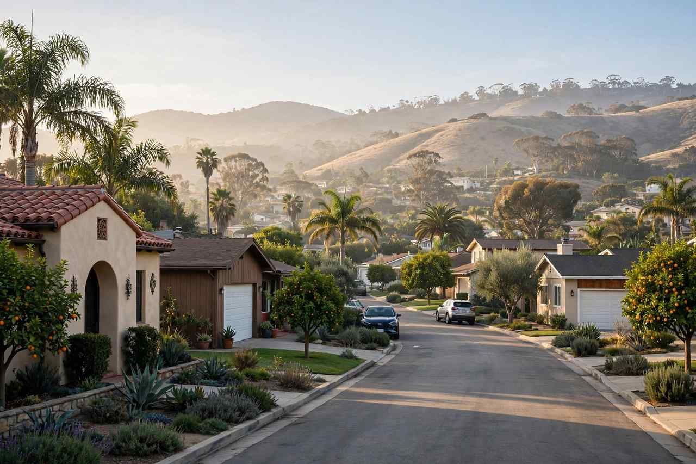

Rodent Control · Inglewood, CA
Licensed Rodent Control in Inglewood, CA
Hearing scratching at night or finding droppings in Inglewood? Murvo is a rodent-only specialist offering same-day service from local crews. We identify the species, remove the infestation, clean up the mess, and exclude rodents for good. Pricing is flat-rate and quoted in writing, the work is guaranteed in writing, and coverage extends across Los Angeles County for homes and businesses alike. From Lennox, Westmont, View Park-Windsor Hills to every corner of Los Angeles County, 11 ZIP codes are covered by local Murvo crews.
24/7Availability
11ZIP codes covered
Same-dayResponse
Licensed · Upfront options · Written guarantees · Fully insured
Inglewood at a glance
Local Rodent Control for Inglewood, CA.
Los Angeles County
Countysouthern California
RegionTorrance · 8 mi
Nearest metro364 miles southeast of Sacramento
From Sacramento11
ZIP codes covered Service by service in Inglewood
Rodent Control Services Available in Inglewood
The full range of residential and commercial rodent services in Inglewood and Los Angeles County - built around the species and housing here, from emergency removal and same-day control to exclusion, proofing, trapping, cleanup, and damage repair. Every service below is quoted flat-rate in writing and backed by our workmanship guarantee.
- 01Rodent Control↗
- 02Rodent Inspection↗
- 03Rodent Removal↗
- 04Rodent Exclusion↗
- 05Rodent Proofing↗
- 06Rat Control↗
- 07Mice Control↗
- 08Mouse Removal↗
- 09Rat Removal↗
- 10Rodent Trapping↗
- 11Rodent Baiting↗
- 12Rodenticide Application↗
- 13Attic Rodent Removal↗
- 14Crawl Space Rodent Removal↗
- 15Wall Rodent Removal↗
- 16Kitchen Rodent Control↗
- 17Garage Rodent Control↗
- 18Commercial Rodent Control↗
- 19Residential Rodent Control↗
- 20Emergency Rodent Removal↗
- 21Same-Day Rodent Control↗
- 22Rodent Damage Repair↗
- 23Rodent Waste Cleanup↗
- 24Rodent Disinfection↗
- 25Rodent Odor Removal↗
- 26Dead Rodent Removal↗
- 27Rodent Dropping Cleanup↗
- 28Rodent Exclusion for Roofs↗
- 29Rodent Exclusion for Vents↗
- 30Rodent Exclusion for Chimneys↗
Rodent Control in Inglewood
Rodent Control in Inglewood
Droppings along baseboards, scratching after dark, or chewed packaging in Inglewood usually mean Roof rat (Rattus rattus) or House mouse (Mus musculus) have moved in, not just passing through. Murvo's rodent control starts with a full inspection, removes the animals already inside, and seals the gaps they used. You get one flat-rate written quote before work begins, backed by our written workmanship guarantee.
In Inglewood, rodent control is not a generic spray-and-go service. Rodents exploit rooflines, eaves and attic vents, crawlspace and raised-foundation gaps, and garage door seals in bungalows and ranch homes, Victorians and stucco row homes, hillside homes, and suburban homes near canyons and open space, and a fix that ignores those routes does not last. Murvo's Inglewood team inspects first, shows you the evidence - droppings, gnaw marks, entry gaps - and then lays out the work with a flat-rate written quote. We serve all of Los Angeles County from Inglewood, including Lennox, Westmont, and every job is covered by our written workmanship guarantee. In Inglewood, rodent control calls most often involve bungalows and ranch homes, Victorians and stucco row homes, hillside homes, and suburban homes near canyons and open space, where rooflines, eaves and attic vents, crawlspace and raised-foundation gaps, and garage door seals decide whether the fix holds.
We start by identifying whether Roof rat (Rattus rattus), House mouse (Mus musculus), or both are active, because each species nests, feeds, and travels differently. Traps are placed on proven runways along walls, beams, and pipe runs, checked on schedule, and adjusted as catches change. Once numbers fall, exclusion sealing closes the route back in, droppings and nesting debris are removed hygienically, and follow-up monitoring checks the attic, crawl space, and kitchen until readings stay clear. Nothing is sealed while animals remain inside. That order protects your home.
Getting started takes one conversation, day or night, because our lines stay open 24/7. Work proceeds only after your approval, in stages you can follow, and a final walkthrough reviews every seal and every monitoring result before sign-off. We book a window that suits your household, confirm access needs in advance, and arrive prepared. Questions after sign-off are welcome at any hour, and the same written record helps any technician pick up your case immediately.
In most of Inglewood, we can offer a same-day appointment for rodent control, and our lines are open 24/7 for urgent cases like scratching in the walls or a rodent in a living area. Your technician inspects first, explains the plan, and quotes a flat rate in writing before any work begins, so help starts fast without surprises. In Los Angeles County, activity follows the local season, so timing the work matters as much as the method.
The honest answer is that it depends on species, activity level, and how much sealing your home needs, which is why Murvo inspects first and then gives you a flat-rate quote in writing. For national context only, Angi's 2026 data averages rat and mouse removal and control at $396, typically $189 to $655; that is not a Murvo price, and your written quote is the figure you pay.
Rodent Inspection in Inglewood
Rodent Inspection in Inglewood
Most Inglewood inspections start with uncertainty: a noise, a smell, a few droppings that might be old. Murvo turns that uncertainty into a written record. A rodent inspection checks attic, crawl space, roofline, and foundation, photographs the evidence, and ends with a flat-rate written quote for anything worth fixing.
In Inglewood, rodent inspection is not a generic spray-and-go service. Rodents exploit rooflines, eaves and attic vents, crawlspace and raised-foundation gaps, and garage door seals in bungalows and ranch homes, Victorians and stucco row homes, hillside homes, and suburban homes near canyons and open space, and a fix that ignores those routes does not last. Murvo's Inglewood team inspects first, shows you the evidence - droppings, gnaw marks, entry gaps - and then lays out the work with a flat-rate written quote. We serve all of Los Angeles County from Inglewood, including Lennox, Westmont, and every job is covered by our written workmanship guarantee. Homes near Lennox tend to show activity first in Inglewood, which is why inspections start with rooflines, eaves and attic vents, crawlspace and raised-foundation gaps, and garage door seals.
The inspection starts outside, where we check the foundation, siding, pipe penetrations, garage doors, and roof junctions, because mice can squeeze through a gap the width of a pencil. We also note where bungalows and ranch homes, Victorians and stucco row homes, hillside homes, and suburban homes near canyons and open space create hidden routes through rooflines, eaves and attic vents, crawlspace and raised-foundation gaps, and garage door seals. Inside, we examine the attic, crawl space, insulation, stored items, and food areas for droppings, nests, rub marks, and gnaw damage. Every finding is photographed and explained, and recommendations are marked urgent or preventive so you can stage the work sensibly.
Booking a rodent inspection in Inglewood takes one call, and same-day appointments are often available. Findings are explained with photos before you receive a flat-rate written quote for any recommended work. Nothing proceeds without your approval, and urgent items are clearly flagged. Your technician arrives on time, walks the property with you, and inspects the attic, crawl space, and exterior in one visit. You keep the full written report either way.
Inspections are the fastest way we help in Inglewood: same-day appointments are available in most areas, and urgent calls are answered 24/7. A typical rodent inspection takes under an hour for most homes, and you leave the visit with photos, written findings, and a flat-rate quote for any work we recommend, so decisions never wait on us. Murvo's Inglewood crews explain the finding either way, and the flat-rate quote leaves the decision with you.
Your exact rodent inspection price is confirmed before we visit, and any follow-up work is quoted as a flat rate in writing after the inspection — no hourly billing. For context, Angi's 2026 data puts a professional rodent inspection nationally at $100 to $200, often credited toward the job if you proceed.
Rodent Removal in Inglewood
Rodent Removal in Inglewood
A removal visit should solve a health concern, not create one. Murvo technicians wear protective equipment, bag and remove contaminated material safely, and keep children and pets away from working areas. We explain each stage in plain language, confirm when rooms are safe to use again, and back the finished job with a written workmanship guarantee.
In Inglewood, rodent removal is not a generic spray-and-go service. Rodents exploit rooflines, eaves and attic vents, crawlspace and raised-foundation gaps, and garage door seals in bungalows and ranch homes, Victorians and stucco row homes, hillside homes, and suburban homes near canyons and open space, and a fix that ignores those routes does not last. Murvo's Inglewood team inspects first, shows you the evidence - droppings, gnaw marks, entry gaps - and then lays out the work with a flat-rate written quote. We serve all of Los Angeles County from Inglewood, including Lennox, Westmont, and every job is covered by our written workmanship guarantee. Coverage for rodent removal spans 11 ZIP codes in Los Angeles County, including 90308, 90309, 90311.
We favor trap-based, no-poison removal first where practical, which is safer around children and pets and avoids animals dying in hidden voids. Traps are matched to the species and setting, placed where droppings and rub marks show real travel routes, then cleared and reset until numbers reach zero. Dead animals in inaccessible places are located and retrieved before odor develops, contaminated nesting material is removed, and sealing recommendations are prioritized so the route indoors closes permanently. Monitoring then confirms the home stays clear.
Once you book rodent removal in Inglewood, we agree a time window and your technician arrives with traps, protective equipment, and a clear plan. When catches reach zero, we walk through the results, discuss sealing, and confirm your written guarantee before closing the job. Progress is photographed and shared with you throughout the program. The first visit confirms activity and sets traps; return visits clear and reset them on schedule. Nothing is left unexplained.
For active infestations in Inglewood, rodent removal can usually start the same day you call, and our team answers 24/7 when a rodent is loose in a living area. The first visit confirms activity and sets traps straight away; return visits then clear and reset them until monitoring shows the property is completely clear. Murvo's Inglewood crews explain the finding either way, and the flat-rate quote leaves the decision with you.
How many animals are active, which species they are, and how much sealing follows removal all shape the price, so we assess first and then quote one flat rate in writing. Angi's 2026 national context — an average of $396 and a typical $189 to $655 range for rat and mouse removal — is provided for comparison only; your written quote is the exact Murvo figure.
Rodent Exclusion in Inglewood
Rodent Exclusion in Inglewood
Trapping alone only buys time if rodents can walk straight back in. Rodent exclusion in Inglewood is the permanent fix: a full entry-point survey, then sealing with materials rodents cannot gnaw through. Murvo clears active animals first so none are sealed inside, gives one flat-rate written quote before work starts, and guarantees the workmanship on every seal installed.
In Inglewood, rodent exclusion is not a generic spray-and-go service. Rodents exploit rooflines, eaves and attic vents, crawlspace and raised-foundation gaps, and garage door seals in bungalows and ranch homes, Victorians and stucco row homes, hillside homes, and suburban homes near canyons and open space, and a fix that ignores those routes does not last. Murvo's Inglewood team inspects first, shows you the evidence - droppings, gnaw marks, entry gaps - and then lays out the work with a flat-rate written quote. We serve all of Los Angeles County from Inglewood, including Lennox, Westmont, and every job is covered by our written workmanship guarantee. Seasonal timing matters for rodent exclusion in Inglewood: rodents surge in Inglewood from October through February.
Before any sealing, active rodents are cleared with trapping so nothing is trapped inside the structure. Because exclusion removes the route in rather than relying on chemicals, it reduces the need for rodenticides and supports pet-safe, no-poison control. A final walkthrough shows you every protected opening, and monitoring checks confirm no new activity appears at sealed points. We then work opening by opening around rooflines, eaves and attic vents, crawlspace and raised-foundation gaps, and garage door seals, rooflines, and utility penetrations, photographing each finished seal. Every seal is listed on your written guarantee.
After booking rodent exclusion in Inglewood, your technician first surveys the whole exterior and confirms which openings are active. Sealing is then completed opening by opening, photographed as we go, and finished with a walkthrough together. Follow-up monitoring is arranged, and every seal is covered by the written workmanship guarantee. You receive a flat-rate written quote listing each seal before work starts. No opening is sealed without being shown to you first.
The first step is a survey, and in Inglewood we can often schedule that survey the same day you call about rodent exclusion. Sealing follows once active animals are cleared — nothing is ever sealed inside — and most homes are fully sealed within days, with entry points near wiring or food areas handled first. In Los Angeles County, most cases involve the Roof rat (Rattus rattus) and the House mouse (Mus musculus), so the inspection focuses on their routes first.
For national context, Angi's 2026 data puts basic exclusion at $200 to $600, depending on access and the number of openings. That is a benchmark, not a Murvo price. After surveying your Inglewood home, we list every opening that needs sealing and quote one flat rate in writing, so you pay for the work your property actually needs and nothing more.
Rodent Proofing in Inglewood
Rodent Proofing in Inglewood
Rodents in Los Angeles County hunt for indoor shelter, food, and water in every season, and unsealed homes are found fast. A Murvo rodent proofing survey checks the roofline, vents, utility entries, and doors before that rush begins. Because proofing prevents infestations instead of reacting to them, it reduces reliance on baits and is backed by our written workmanship guarantee.
In Inglewood, rodent proofing is not a generic spray-and-go service. Rodents exploit rooflines, eaves and attic vents, crawlspace and raised-foundation gaps, and garage door seals in bungalows and ranch homes, Victorians and stucco row homes, hillside homes, and suburban homes near canyons and open space, and a fix that ignores those routes does not last. Murvo's Inglewood team inspects first, shows you the evidence - droppings, gnaw marks, entry gaps - and then lays out the work with a flat-rate written quote. We serve all of Los Angeles County from Inglewood, including Lennox, Westmont, and every job is covered by our written workmanship guarantee. Seasonal timing matters for rodent proofing in Inglewood: rodents surge in Inglewood from October through February.
Where proofing overlaps with structural exclusion, we use the same chew-resistant materials: copper mesh, hardware cloth, metal flashing, and durable sealants matched to each opening. The written plan distinguishes homeowner tasks from professional work, and seasonal re-checks after completion catch new gaps early, before they can turn into another indoor infestation for your household. Around kitchens, we coordinate sealing behind units and along pipe runs; in garages, we tackle stored-food and clutter harborage directly. That keeps protection current year after year.
On proofing day, expect one tidy visit for most homes. Before leaving, you walk the finished work together, confirm the guarantee in writing, and book the seasonal re-check that keeps the protection current year after year. Agreed sealing and screening are completed, sweeps are fitted, and attractant advice is tailored to your garage, kitchen, and yard. The re-check is not a formality, because it catches shifted sweeps, damaged screens, and new gaps before rodents discover them first.
Rodent proofing is preventive, so there is rarely a rush, but surveys in Inglewood can often be arranged the same day you call, and always within a few days. Most proofing work is completed in a single visit once you approve the plan, and booking before colder weather gives your home protection ahead of the seasonal rush indoors. The written quote for your Inglewood property will spell out exactly which of these applies before any work starts.
We survey your Inglewood property first, separate the quick wins you can handle yourself from the specialist sealing, and quote the professional work as one flat rate in writing so spending can be staged. Angi's 2026 national context puts exclusion, the core of proofing, at $200 to $600 for basic work — a benchmark only, not a Murvo price.
Rat Control in Inglewood
Rat Control in Inglewood
In Inglewood, bungalows and ranch homes, Victorians and stucco row homes, hillside homes, and suburban homes near canyons and open space give Roof rat (Rattus rattus) and House mouse (Mus musculus) harborage in attics, basements, and outbuildings, with food and water rarely far away. Our licensed, insured technicians check drains, vents, and outbuildings too, because rats travel between structures and one missed harborage undermines the whole program. Safety briefings cover trap locations and hygiene so your household knows the plan.
When you need rat control in Inglewood, the job starts with what is actually happening in your part of Los Angeles County. Murvo crews work Inglewood every week, so they know how Roof rat (Rattus rattus) and House mouse (Mus musculus) behave around bungalows and ranch homes, Victorians and stucco row homes, hillside homes, and suburban homes near canyons and open space here - and where they get in: rooflines, eaves and attic vents, crawlspace and raised-foundation gaps, and garage door seals. We arrive equipped for the full job, confirm the flat rate in writing before work begins, and cover the whole Inglewood area, including Lennox, Westmont. No call-center runaround and no open-ended hourly billing - just a local crew, a clear plan, and a written quote you approve first. Around Lennox, Westmont, View Park-Windsor Hills, the pattern is similar: House mouse (Mus musculus) finds rooflines, eaves and attic vents, crawlspace and raised-foundation gaps, and garage door seals first, and lasting rat control has to close those routes.
Wary rats punish rushed trapping, so the program begins with patience. Unset traps are placed on confirmed runways and pre-baited until feeding becomes confident and regular. Only then are traps set, checked frequently, and repositioned as the pattern shifts. Catches are recorded by location, giving a clear picture of colony size and movement. Exclusion follows at rooflines and entry points, and monitoring devices remain in place afterwards to verify that quiet routes have genuinely stayed quiet. Counts matter here, because a falling catch trend tells a different story from a single lucky night.
Between visits, keep pet food secured and avoid moving any traps, even slightly, since position matters. Your background-checked technician returns on schedule, removes trapped rats promptly, adjusts placements, and reports counts plainly. The program closes only when monitoring confirms activity has ended and exclusion is finished, with your guarantee confirmed in writing at sign-off. Keep gates and access points available on scheduled days where possible, since uninterrupted checks keep the program on its planned timetable.
Call day or night — urgent rat control calls in Inglewood are answered 24/7, and a same-day inspection can usually start the program. Pre-baiting begins on that first visit once you approve the written quote, traps are set when rats are feeding confidently, and scheduled checks continue until activity stops. If you are seeing signs now, an inspection this week is the fastest way to know which situation you are in.
Species, colony size, and the number of entry points to seal all affect rat work, which is why Murvo inspects first and quotes one flat rate in writing. Angi's 2026 figures, given for national context only, average rat control and removal at $396 and typically run $189 to $655; the written quote for your Inglewood home is the exact price.
Mice Control in Inglewood
Mice Control in Inglewood
Mice slip into bungalows and ranch homes, Victorians and stucco row homes, hillside homes, and suburban homes near canyons and open space in Inglewood through rooflines, eaves and attic vents, crawlspace and raised-foundation gaps, and garage door seals and settle near warmth and food: behind appliances, inside attic voids, and along pipe runs. Because they investigate new objects quickly, clustered traps work fast when placed correctly. Our licensed, insured technicians also advise on food storage and scent-trail cleaning, then confirm with follow-up visits that activity has genuinely stopped.
Homeowners in Inglewood call Murvo for mice control because the problem here is specific: Roof rat (Rattus rattus) pressure around bungalows and ranch homes, Victorians and stucco row homes, hillside homes, and suburban homes near canyons and open space, tight access at rooflines, eaves and attic vents, crawlspace and raised-foundation gaps, and garage door seals, and activity that follows the local season. Our Los Angeles County crews diagnose the real source before recommending work, explain the options in plain language, and quote one flat rate in writing. Across Inglewood - including Lennox, Westmont - every visit is backed by licensed, insured technicians and our written workmanship guarantee. Homes near Lennox tend to show activity first in Inglewood, which is why inspections start with rooflines, eaves and attic vents, crawlspace and raised-foundation gaps, and garage door seals.
Our integrated approach favors trapping and sealing over baits, with genuinely pet-safe options for family homes. Food-storage advice removes the attraction that drew mice in, and sealing is completed as whole-home proofing so kitchens, attics, and voids stay clear after the program ends. Droppings in cabinets are never dry-swept; following CDC guidance, surfaces are disinfected first so contamination is not spread into the air, and nesting debris is bagged and removed. Catch records show exactly how numbers fall each visit.
Book mice control in Inglewood with one call, and same-day visits are available in many areas. Trap checks are scheduled before we leave, and a follow-up visit confirms activity has stopped before the job is signed off. Your technician surveys the kitchen, attic, and voids, explains where mice are traveling, and gives you a flat-rate written quote before setting a single trap. Everything is explained in plain language for your household.
Mice programs move quickly in Inglewood: a mice control survey can often be arranged the same day you call, and traps are set on that first visit once you approve the quote. Because mice investigate new objects fast, catches usually begin quickly, and scheduled check visits follow until a final confirmation shows activity has fully stopped. In Los Angeles County, most cases involve the Roof rat (Rattus rattus) and the House mouse (Mus musculus), so the inspection focuses on their routes first.
The number of rooms affected and the amount of sealing required set the price, so Murvo surveys first and quotes one flat rate in writing. For national context only, Angi's 2026 data averages rat and mouse control and removal at $396, typically $189 to $655 — not a Murvo price; your written quote is exact.
Mouse Removal in Inglewood
Mouse Removal in Inglewood
Removal is only half the job in Los Angeles County homes, because new mice follow the same scent trails and gaps within days. Murvo pairs trapping with droppings and nesting cleanup, safe disinfection, and proper exclusion sealing, all delivered by licensed, insured, background-checked technicians. For repeated problems, seasonal proofing checks sweeps and seals before the fall rush of mice seeking warmth.
Homeowners in Inglewood call Murvo for mouse removal because the problem here is specific: Roof rat (Rattus rattus) pressure around bungalows and ranch homes, Victorians and stucco row homes, hillside homes, and suburban homes near canyons and open space, tight access at rooflines, eaves and attic vents, crawlspace and raised-foundation gaps, and garage door seals, and activity that follows the local season. Our Los Angeles County crews diagnose the real source before recommending work, explain the options in plain language, and quote one flat rate in writing. Across Inglewood - including Lennox, Westmont - every visit is backed by licensed, insured technicians and our written workmanship guarantee. Homes near Lennox tend to show activity first in Inglewood, which is why inspections start with rooflines, eaves and attic vents, crawlspace and raised-foundation gaps, and garage door seals.
The survey comes first, and it is deliberately thorough. Lofts, under-floor voids, cabinets, and the spaces behind kitchen units are checked for nests, droppings, and stored food caches. Traps are then set in multiples at proven points, because a single trap rarely reflects colony size. Returns are scheduled tightly: catches are cleared, traps reset, and numbers tracked until they fall to zero and stay there across a confirming check before sealing begins. Photographs of nesting sites help here, because they reveal how far activity had spread before trapping began.
As catches fall, the focus shifts in order: final clearing, disinfection of affected areas, then sealing of access points. Your technician reviews the catch record with you at sign-off, confirms which rooms are fully safe to use, and leaves prevention advice plus guarantee paperwork. Seasonal proofing can be arranged if your property has repeated fall problems. If signs reappear during monitoring, placements are restored under the same agreed program rather than starting a new conversation from scratch.
In Inglewood, mouse removal can often begin the same day you call, especially where mice are active in kitchens or living areas. The first visit surveys nesting sites and sets traps immediately after you approve the quote; because mice investigate traps quickly, catches usually start fast, and return visits continue until numbers reach zero. In Los Angeles County, activity follows the local season, so timing the work matters as much as the method.
Mouse removal cost reflects the number of rooms involved and how much sealing is needed, which is why Murvo surveys first and quotes a flat rate in writing. For national context only, Angi's 2026 data averages rat and mouse removal at $396, typically $189 to $655. That benchmark is not a Murvo price; your written quote covers your exact program.
Rat Removal in Inglewood
Rat Removal in Inglewood
If rats are active in your Inglewood home right now, Murvo offers a same-day response and a clear written plan, with lines open 24/7 for urgent cases. Removal is delivered as one coordinated job: trapping, hygienic disposal, prevention, and a final walkthrough with monitoring evidence, so you are never asked to simply take our word that activity ended.
Homeowners in Inglewood call Murvo for rat removal because the problem here is specific: Roof rat (Rattus rattus) pressure around bungalows and ranch homes, Victorians and stucco row homes, hillside homes, and suburban homes near canyons and open space, tight access at rooflines, eaves and attic vents, crawlspace and raised-foundation gaps, and garage door seals, and activity that follows the local season. Our Los Angeles County crews diagnose the real source before recommending work, explain the options in plain language, and quote one flat rate in writing. Across Inglewood - including Lennox, Westmont - every visit is backed by licensed, insured technicians and our written workmanship guarantee. In Inglewood, rat removal calls most often involve bungalows and ranch homes, Victorians and stucco row homes, hillside homes, and suburban homes near canyons and open space, where rooflines, eaves and attic vents, crawlspace and raised-foundation gaps, and garage door seals decide whether the fix holds.
Removal stays trap-led and exclusion-backed throughout. After clearance, contaminated areas are sanitized carefully, with surfaces disinfected before cleaning and droppings never dry-swept. Monitoring devices and a documented final walkthrough then prove activity has ended, and proofing advice covers drains, vents, and rooflines going forward. Locked bait stations appear only where a site genuinely justifies them, positioned away from pets and food, labeled, and monitored on schedule; loose bait is never used. That written evidence stays with you, including the monitoring readings that supported the decision to sign off.
Help the program by securing food, clearing access to the attic or basement, and leaving traps exactly where placed. Your background-checked technician handles removal, adjustments, sanitation, and the final monitoring period. Sign-off includes the documented evidence, your guarantee in writing, and practical proofing guidance tailored to how rats reached your property in the first place. You also receive guidance on drains, vegetation, and storage specific to your property, aimed at discouraging the next colony from settling.
In Inglewood, rat removal can usually start the same day you call, with 24/7 answering for rats active in living areas. Pre-baiting begins on the first visit after you approve the written quote, and traps are set once rats feed confidently, typically within days. Repeat visits then run frequently until monitoring confirms the colony is gone. If you are seeing signs now, an inspection this week is the fastest way to know which situation you are in.
Colony size, access, and the sealing needed afterwards drive the price, so Murvo assesses the property first and quotes a flat rate in writing covering the full program. Angi's 2026 data, for national context only, averages rat removal at $396 and typically ranges from $189 to $655; that is a benchmark, not a Murvo price.
Rodent Trapping in Inglewood
Rodent Trapping in Inglewood
Trapping is the most accountable way to clear rodents: every catch is counted, located, and recorded. Murvo's rodent trapping in Inglewood places traps perpendicular to walls and along beams, pipes, and fence lines where rodents actually travel, using snap traps, multi-catch devices, or live-capture options as the situation requires. You approve one flat-rate written quote before we start.
Homeowners in Inglewood call Murvo for rodent trapping because the problem here is specific: Roof rat (Rattus rattus) pressure around bungalows and ranch homes, Victorians and stucco row homes, hillside homes, and suburban homes near canyons and open space, tight access at rooflines, eaves and attic vents, crawlspace and raised-foundation gaps, and garage door seals, and activity that follows the local season. Our Los Angeles County crews diagnose the real source before recommending work, explain the options in plain language, and quote one flat rate in writing. Across Inglewood - including Lennox, Westmont - every visit is backed by licensed, insured technicians and our written workmanship guarantee. The Inglewood crews who handle rodent trapping also handle the follow-through - proofing, cleanup, and monitoring - so one visit can close the whole problem.
A program opens with mapping, not trap placement. For rats, pre-baiting runs several days before traps are set, the step most amateur attempts skip. Every device is numbered, recorded, and revisited on a fixed schedule. Technicians read droppings, rub marks, and gnaw damage to reconstruct nightly routes through attics, basements, and kitchens. Devices are then selected for each location: snap traps for decisive results, multi-catch units on busy mouse routes, live-capture where release is preferred. The map also prevents a common mistake: removing a device that looks empty while its route is still active.
Between checks, leave devices untouched and note any new noises or droppings by room; that information sharpens the next visit. Your background-checked technician adjusts placements as the pattern changes and removes catches promptly and hygienically. The program ends with a clear monitoring result, a written summary of what was caught where, and sealing advice. The summary also notes which routes stayed busiest, information that makes any later exclusion work faster and more precisely targeted.
In Inglewood, rodent trapping can usually start the same day you call, with traps placed or pre-baiting begun on the first visit after you approve the quote. Mice often investigate within the first night; wary rats need a few days of pre-baiting before traps are set. Scheduled check visits then keep catches moving until numbers reach zero. If you are seeing signs now, an inspection this week is the fastest way to know which situation you are in.
Trapping is usually quoted as part of a complete removal program rather than by the trap, and the price depends on species, activity level, and how many check visits are needed. Murvo inspects first and quotes one flat rate in writing covering the program and its check visits, so there are no per-visit surprises and no hourly billing at any stage.
Rodent Baiting in Inglewood
Rodent Baiting in Inglewood
Baiting suits established rat activity outdoors or in garages around Inglewood, where droppings keep returning despite traps. Even then, our approach is exclusion-first: seal the entry points around rooflines, eaves and attic vents, crawlspace and raised-foundation gaps, and garage door seals, trap what is already inside, and use locked stations only to reduce outdoor pressure. Stations are labeled, secured, photographed, and removed once monitoring shows activity has ended.
Homeowners in Inglewood call Murvo for rodent baiting because the problem here is specific: Roof rat (Rattus rattus) pressure around bungalows and ranch homes, Victorians and stucco row homes, hillside homes, and suburban homes near canyons and open space, tight access at rooflines, eaves and attic vents, crawlspace and raised-foundation gaps, and garage door seals, and activity that follows the local season. Our Los Angeles County crews diagnose the real source before recommending work, explain the options in plain language, and quote one flat rate in writing. Across Inglewood - including Lennox, Westmont - every visit is backed by licensed, insured technicians and our written workmanship guarantee. Seasonal timing matters for rodent baiting in Inglewood: rodents surge in Inglewood from October through February.
Baiting follows Inspect, Remove, Exclude, Clean, and Monitor, and it never stands alone. We return on schedule to check consumption, record amounts, and adjust positions, and stations are removed when activity ends rather than left indefinitely. After a full inspection maps activity, background-checked technicians choose station locations along runways, fence lines, and entry points, away from pet play areas and food storage. Every station is tamper-resistant, locked, labeled, and anchored, with placement photographed for your records. Loose bait is never used anywhere.
During monitoring, keep station areas undisturbed and tell us about any change in droppings or sightings. The program closes with stations out, sealing recommendations confirmed, and the full record, including photographs, left with you in writing. Your technician checks consumption on schedule, reports the trend plainly, and adjusts or removes stations as evidence dictates. If your household circumstances change, tell us; station locations and the wider plan can be reviewed and adjusted at the next check.
Deliberate setup matters more than speed with rodent baiting, but the first step is still fast: an inspection in Inglewood can often be arranged the same day you call. Stations are placed only after activity is mapped and you approve the written quote and each location, then monitoring runs on a fixed schedule until consumption stops and activity is confirmed clear. If you are seeing signs now, an inspection this week is the fastest way to know which situation you are in.
Baiting cost depends on how many locked stations your property needs and how long monitoring runs, so Murvo inspects and maps activity first, then quotes one flat rate in writing covering placement and scheduled checks. There are no per-visit surprises, and because our approach is exclusion-first, the goal is always to reduce and eventually remove stations, not maintain them forever.
Rodenticide Application in Inglewood
Rodenticide Application in Inglewood
Rodenticides are powerful products that can harm pets, children, and wildlife if misused, so Murvo treats rodenticide application in Inglewood as a last resort, never a first step. Products are placed only inside tamper-resistant locked stations, never as loose pellets or open trays, and only after inspection confirms trapping and exclusion alone will not solve the problem.
When you need rodenticide application in Inglewood, the job starts with what is actually happening in your part of Los Angeles County. Murvo crews work Inglewood every week, so they know how Roof rat (Rattus rattus) and House mouse (Mus musculus) behave around bungalows and ranch homes, Victorians and stucco row homes, hillside homes, and suburban homes near canyons and open space here - and where they get in: rooflines, eaves and attic vents, crawlspace and raised-foundation gaps, and garage door seals. We arrive equipped for the full job, confirm the flat rate in writing before work begins, and cover the whole Inglewood area, including Lennox, Westmont. No call-center runaround and no open-ended hourly billing - just a local crew, a clear plan, and a written quote you approve first. Seasonal timing matters for rodenticide application in Inglewood: rodents surge in Inglewood from October through February.
The first decision is whether application is justified, and often it is not. Inspection confirms species and activity, then trapping and exclusion are weighed honestly; if those methods can solve the problem safely, they are recommended instead. Where treatment is justified, stations are mapped, anchored, and labeled, products remain inside locked units at all times, and scheduled checks record amounts precisely. Monitoring data then governs whether treatment continues, changes, or stops in favor of proofing alone. If consumption patterns look unusual, technicians investigate rather than simply refilling, because unexpected patterns can signal a different species.
Before the visit, tell us about children, pets, livestock, and wildlife using the property; that information shapes product and placement decisions. On the day, your background-checked technician installs any approved stations locked and labeled, records the details, and explains what to watch for. Scheduled checks follow until activity ends and stations are removed. Label information, amounts, and visit dates stay in your records throughout, so the treatment history is complete and available whenever needed.
No responsible rodenticide application starts without an inspection, and in Inglewood that inspection can often be scheduled the same day you call. If treatment is justified and you approve the written quote, locked stations are installed on that visit. Monitoring then runs on schedule, and treatment stops as soon as the data shows activity has ended. That is also why Murvo pairs removal with exclusion in Inglewood - treating the animal without closing rooflines, eaves and attic vents, crawlspace and raised-foundation gaps, and garage door seals rarely lasts.
Station numbers, the product permitted under California rules, and the length of monitoring all shape the price. Murvo inspects first, explains whether trapping or exclusion could avoid chemical control entirely, and then quotes one flat rate in writing before work begins. That quote covers scheduled monitoring visits, so there are no per-visit surprises later.
Attic Rodent Removal in Inglewood
Attic Rodent Removal in Inglewood
Scratching overhead at night in Inglewood usually means Roof rat (Rattus rattus) climbing to the roofline or House mouse (Mus musculus) slipping through vent gaps into your attic. Murvo's attic rodent removal inspects the attic, roof, and eaves, traps active animals up there, and seals the roofline behind them. Same-day visits are prioritized when chewed wiring is found, because that damage is a genuine fire risk.
When you need attic rodent removal in Inglewood, the job starts with what is actually happening in your part of Los Angeles County. Murvo crews work Inglewood every week, so they know how Roof rat (Rattus rattus) and House mouse (Mus musculus) behave around bungalows and ranch homes, Victorians and stucco row homes, hillside homes, and suburban homes near canyons and open space here - and where they get in: rooflines, eaves and attic vents, crawlspace and raised-foundation gaps, and garage door seals. We arrive equipped for the full job, confirm the flat rate in writing before work begins, and cover the whole Inglewood area, including Lennox, Westmont. No call-center runaround and no open-ended hourly billing - just a local crew, a clear plan, and a written quote you approve first. Homes near Lennox tend to show activity first in Inglewood, which is why inspections start with rooflines, eaves and attic vents, crawlspace and raised-foundation gaps, and garage door seals.
Cleanup in a contaminated attic follows CDC guidance: droppings and nesting material are never dry-swept, because that can spread contamination into the air; surfaces are disinfected first, then waste is removed hygienically by technicians in protective equipment. Our IPM approach favors trapping and exclusion over poison in attics, preventing animals dying in inaccessible voids. We also assess insulation damage and can refer repairs, check adjoining crawl spaces for connected activity, and advise on clearing roof debris. Photographs document conditions before and after work.
Before the visit, clear access to the attic hatch and note when noises are loudest. On arrival, your background-checked technician explains the plan, starts trapping once the quote is approved, and reports insulation and wiring findings plainly. The job closes with a monitoring check, a walkthrough of photographs, and guarantee paperwork in your hands. After sealing, a quiet attic is verified rather than assumed, and the monitoring result is reported to you before the job closes.
Overhead scratching in Inglewood often gets a same-day attic rodent removal visit, and attics with chewed wiring are prioritized because of the fire risk. Trapping starts on the first visit once you approve the written quote, checks run on schedule, and most attics are cleared and sealed within days. Monitoring stays in place briefly afterwards to confirm nothing remains inside. In Los Angeles County, activity follows the local season, so timing the work matters as much as the method.
Attic costs depend on how many animals are active, how much sealing the roofline needs, and whether contaminated insulation requires cleanup, so Murvo inspects first and quotes one flat rate in writing. That quote covers the removal program described, with cleanup options priced separately in writing before you decide, so there are no surprises once work is underway.
Crawl Space Rodent Removal in Inglewood
Crawl Space Rodent Removal in Inglewood
Why avoid poison beneath a home? Pets can access crawl spaces, and carcasses hidden under a house are difficult to retrieve. Murvo favors trapping and physical exclusion instead, delivered by licensed, insured technicians who photograph every sealed opening, refit access panels securely, and confirm results with monitoring under a written guarantee.
In Inglewood, crawl space rodent removal is not a generic spray-and-go service. Rodents exploit rooflines, eaves and attic vents, crawlspace and raised-foundation gaps, and garage door seals in bungalows and ranch homes, Victorians and stucco row homes, hillside homes, and suburban homes near canyons and open space, and a fix that ignores those routes does not last. Murvo's Inglewood team inspects first, shows you the evidence - droppings, gnaw marks, entry gaps - and then lays out the work with a flat-rate written quote. We serve all of Los Angeles County from Inglewood, including Lennox, Westmont, and every job is covered by our written workmanship guarantee. The Inglewood crews who handle crawl space rodent removal also handle the follow-through - proofing, cleanup, and monitoring - so one visit can close the whole problem.
Cleanup beneath a home follows careful practice throughout. Technicians also trace connections upward through wall voids, checking whether activity reaches the attic, and report moisture issues with practical recommendations. Photographs of every finished seal accompany your guarantee paperwork, creating a record of exactly what was closed. Droppings and nesting debris are never dry-swept, since disturbing them can spread contamination; surfaces are disinfected first, then waste is bagged and removed by technicians wearing protective equipment. Vent and pier sealing is checked from inside the space, not assumed sound from a glance outside.
After booking, we confirm crawl-space access and any known leaks or standing water beneath the home. Follow-up visits are booked ahead for clearance and sealing. The job closes with a monitoring check and a walkthrough of the documented results together. On arrival, your background-checked technician inspects with protective equipment, sets traps at active areas, and talks you through the findings with photos. Every stage is approved by you before it proceeds.
For crawl space rodent removal in Inglewood, inspections are usually arranged within a few days — and sooner when odors are drifting into living areas or activity sounds heavy. Trapping begins on the first visit after you approve the written quote, clearance and sealing follow in sequence, and monitoring stays in place until the space below is confirmed quiet. In Los Angeles County, most cases involve the Roof rat (Rattus rattus) and the House mouse (Mus musculus), so the inspection focuses on their routes first.
Access, the number of vents and gaps to seal, and whether waste cleanup is required all shape crawl-space pricing, so Murvo inspects first and quotes one flat rate in writing. Cleanup options are priced in writing before you decide whether to include them, and there are no surprise charges for extra vents within the agreed scope.
Wall Rodent Removal in Inglewood
Wall Rodent Removal in Inglewood
Scratching inside a wall in Inglewood is maddening precisely because you cannot see what is causing it. Murvo's wall rodent removal locates activity using listening, thermal clues, and entry tracing, then places trapping at void access points to draw animals out without unnecessary demolition. A flat-rate written quote comes first, and access cuts are only made when truly needed.
In Inglewood, wall rodent removal is not a generic spray-and-go service. Rodents exploit rooflines, eaves and attic vents, crawlspace and raised-foundation gaps, and garage door seals in bungalows and ranch homes, Victorians and stucco row homes, hillside homes, and suburban homes near canyons and open space, and a fix that ignores those routes does not last. Murvo's Inglewood team inspects first, shows you the evidence - droppings, gnaw marks, entry gaps - and then lays out the work with a flat-rate written quote. We serve all of Los Angeles County from Inglewood, including Lennox, Westmont, and every job is covered by our written workmanship guarantee. The Inglewood crews who handle wall rodent removal also handle the follow-through - proofing, cleanup, and monitoring - so one visit can close the whole problem.
Once the void is clear, the route gets closed and the space made safe. Monitoring at key access points and repeat quiet-wall checks then confirm silence before any minimal, agreed access cut is made good. Baseboard and pipe gaps linked to kitchen activity are sealed as part of wider proofing. If a rodent has died inside, retrieval is followed by sanitation: contaminated material is never dry-swept, surfaces are disinfected first, and odor treatment discourages new animals from investigating. Only then is the job closed, with the monitoring record and any sanitation work documented for you.
After booking, tell us when the noises happen; timing helps pinpoint the active void before we arrive. Follow-up visits clear traps and run quiet-wall checks at different times of day. Sign-off happens only when monitoring confirms silence. On the day, your background-checked technician listens, traces, and inspects with cameras where possible, then sets traps at access points once you approve the quote. Any access cut is agreed and made good neatly.
Persistent wall scratching in Inglewood often qualifies for a same-day locating visit, especially when it is keeping you awake. On that first visit, once you approve the written quote, traps are set at void access points; because rodents travel the void nightly, results usually follow within days. Quiet-wall checks confirm the silence before we sign off. That is also why Murvo pairs removal with exclusion in Inglewood - treating the animal without closing rooflines, eaves and attic vents, crawlspace and raised-foundation gaps, and garage door seals rarely lasts.
Wall work pricing depends on how precisely activity can be located and whether a minimal access cut is needed, which is why Murvo locates the activity first and quotes a flat rate in writing. That way wall access work never becomes an open-ended bill, and the quote covers the trapping, sealing, and monitoring described in your plan.
Kitchen Rodent Control in Inglewood
Kitchen Rodent Control in Inglewood
If you are hearing scratching under units at night in Inglewood, the kitchen is rarely the whole story. Murvo traces routes from wall voids and basements, sets discreet traps away from food surfaces, and seals the real entry points. You get one flat-rate written quote before work starts.
Homeowners in Inglewood call Murvo for kitchen rodent control because the problem here is specific: Roof rat (Rattus rattus) pressure around bungalows and ranch homes, Victorians and stucco row homes, hillside homes, and suburban homes near canyons and open space, tight access at rooflines, eaves and attic vents, crawlspace and raised-foundation gaps, and garage door seals, and activity that follows the local season. Our Los Angeles County crews diagnose the real source before recommending work, explain the options in plain language, and quote one flat rate in writing. Across Inglewood - including Lennox, Westmont - every visit is backed by licensed, insured technicians and our written workmanship guarantee. Coverage for kitchen rodent control spans 11 ZIP codes in Los Angeles County, including 90308, 90309, 90311.
Rather than starting with traps, we start with questions: where did you see signs, and when? Once species and routes are confirmed, traps go where rodents actually travel, kept clear of counters and stored food. Gaps around plumbing get sealed, contaminated spots get cleaned, and return checks confirm whether movement has ended. Answers guide a close look under sinks, behind appliances and inside lower cabinets. If activity shifts, placement changes with it, because a fixed plan rarely fits a moving problem inside a busy working kitchen.
After you book, a licensed, background-checked Murvo technician arrives at the agreed time and inspects behind appliances, sinks and cabinets. Once approved, trapping and sealing go ahead, contaminated areas are disinfected, and we explain the hygiene notes for your layout. Follow-up monitoring continues until kitchen activity stops, and the work is backed by our written workmanship guarantee. You receive a flat-rate written quote before anything starts. You stay informed at every stage of the work.
Our phone lines are open 24/7, and kitchen cases involving droppings near food preparation areas are treated as a priority. In many Inglewood cases we can arrange a same-day visit, subject to technician availability. Call, describe what you have found, and we will offer the earliest appointment we can. An Inglewood inspection confirms it on site - dropping size, gnaw marks, and entry points tell the story quickly.
Cost depends on how many rodents are active, where they are entering, and how much sealing and cleanup the kitchen needs. Murvo inspects first, then gives one flat-rate written quote covering trapping, sealing and follow-up monitoring, with no hourly billing or add-on surprises. You approve the full price before any work begins, and the quote is backed by our written workmanship guarantee.
Garage Rodent Control in Inglewood
Garage Rodent Control in Inglewood
Boxes stacked against a wall make perfect cover. While the garage stays undisturbed, rodents chew, nest and breed out of sight in many bungalows and ranch homes, Victorians and stucco row homes, hillside homes, and suburban homes near canyons and open space. Our team in Inglewood works through the clutter zones methodically, removes the animals, cleans affected spots, and shows you how raised, sealed storage removes the shelter they depend on.
Homeowners in Inglewood call Murvo for garage rodent control because the problem here is specific: Roof rat (Rattus rattus) pressure around bungalows and ranch homes, Victorians and stucco row homes, hillside homes, and suburban homes near canyons and open space, tight access at rooflines, eaves and attic vents, crawlspace and raised-foundation gaps, and garage door seals, and activity that follows the local season. Our Los Angeles County crews diagnose the real source before recommending work, explain the options in plain language, and quote one flat rate in writing. Across Inglewood - including Lennox, Westmont - every visit is backed by licensed, insured technicians and our written workmanship guarantee. In Inglewood, garage rodent control calls most often involve bungalows and ranch homes, Victorians and stucco row homes, hillside homes, and suburban homes near canyons and open space, where rooflines, eaves and attic vents, crawlspace and raised-foundation gaps, and garage door seals decide whether the fix holds.
Door corners get checked before anything else, because daylight showing at the base often marks the main entrance. From there we follow droppings and rub marks along walls, behind storage and toward utility lines entering the house. Traps sit on those travel lines, not scattered at random. Nesting comes out safely, entry points get sealed with sturdy materials, and the door sweep is addressed where it has failed. Final monitoring tells us whether the garage is truly quiet or whether activity is still passing through.
Share a few details when you book: what you found, where, and whether vehicles need moving. At the visit, the technician walks the garage with you, confirms entry points, and provides the full price in writing before starting. Trapping, nest clearing and sealing then proceed in order. Return visits check monitors and traps, and the job wraps up only when checks show no continuing activity around doors, walls or stored items inside the garage.
Our phones are answered 24/7, and garages with active nesting, damaged wiring or movement into the house are treated as urgent. Depending on technician schedules, a same-day appointment in Inglewood is often possible. Describe the signs when you call and we will offer the earliest visit we can arrange. An Inglewood inspection confirms it on site - dropping size, gnaw marks, and entry points tell the story quickly.
Pricing depends on garage size, how established the infestation is, and how much proofing the doors and walls need. Murvo inspects first and quotes one flat rate in writing, covering trapping, nest removal, sealing and monitoring, with no hourly charges. Nothing starts until you approve that price, and the completed work is backed by our written workmanship guarantee.
Commercial Rodent Control in Inglewood
Commercial Rodent Control in Inglewood
Auditors look for evidence, not excuses. A single dropping near stored ingredients can undo months of careful work for a Inglewood restaurant. Murvo's commercial rodent control protects food sites, warehouses and shops with documented inspections, monitored control and exclusion, beginning with a flat-rate written quote for the initial work you approve in advance.
In Inglewood, commercial rodent control is not a generic spray-and-go service. Rodents exploit rooflines, eaves and attic vents, crawlspace and raised-foundation gaps, and garage door seals in bungalows and ranch homes, Victorians and stucco row homes, hillside homes, and suburban homes near canyons and open space, and a fix that ignores those routes does not last. Murvo's Inglewood team inspects first, shows you the evidence - droppings, gnaw marks, entry gaps - and then lays out the work with a flat-rate written quote. We serve all of Los Angeles County from Inglewood, including Lennox, Westmont, and every job is covered by our written workmanship guarantee. Around Lennox, Westmont, View Park-Windsor Hills, the pattern is similar: House mouse (Mus musculus) finds rooflines, eaves and attic vents, crawlspace and raised-foundation gaps, and garage door seals first, and lasting commercial rodent control has to close those routes.
Your program begins away from the shop floor, in the places rodents prefer: docks, plant rooms, bin stores, ceiling voids and delivery entrances. We map activity there first, then connect it to sightings inside. Monitored traps are positioned discreetly, outdoor stations stay locked, and product use is logged in full. Exclusion targets dock seals, vents and service gaps. After each visit you receive a clear report covering findings, actions and trends, written so a restaurant manager or warehouse operator can hand it straight to an auditor.
Reach out and we will arrange a survey at a time that does not disrupt trading. Once approved, initial removal and sealing begin discreetly, with a report after every visit for your compliance file. The surveyor walks the whole site, notes risks by area, and sends a written proposal before any work starts. Scheduled checks continue from there, reviews track the trend, and urgent sightings can be reported by phone at any hour, day or night.
Commercial calls are taken 24/7, and a live sighting during trading is handled as an emergency with discretion to protect customers and reputation. The visit we can offer in Inglewood depends on technician availability, and we will always give you the earliest one possible. We can also advise on immediate steps to protect stock and your audit position while you wait. The written quote for your Inglewood property will spell out exactly which of these applies before any work starts.
For wider context, Angi's 2026 figures put rat extermination at $189-$655, averaging $396 nationally, though commercial sites are scoped individually and those figures are not Murvo prices. Site size, sector, activity and the exclusion and monitoring required all shape the cost. Murvo surveys first, then quotes a flat rate in writing for initial work or a clear scheduled-service price for an ongoing program, with reports included for your audit file.
Residential Rodent Control in Inglewood
Residential Rodent Control in Inglewood
Homes in bungalows and ranch homes, Victorians and stucco row homes, hillside homes, and suburban homes near canyons and open space give rodents warmth, food and quiet nesting space. Our residential rodent control in Inglewood starts with a thorough inspection, uses pet-conscious methods with no loose poison indoors, and backs the finished work with a written workmanship guarantee from licensed, insured technicians. Help is available around the clock, every day.
In Inglewood, residential rodent control is not a generic spray-and-go service. Rodents exploit rooflines, eaves and attic vents, crawlspace and raised-foundation gaps, and garage door seals in bungalows and ranch homes, Victorians and stucco row homes, hillside homes, and suburban homes near canyons and open space, and a fix that ignores those routes does not last. Murvo's Inglewood team inspects first, shows you the evidence - droppings, gnaw marks, entry gaps - and then lays out the work with a flat-rate written quote. We serve all of Los Angeles County from Inglewood, including Lennox, Westmont, and every job is covered by our written workmanship guarantee. Coverage for residential rodent control spans 11 ZIP codes in Los Angeles County, including 90308, 90309, 90311.
Instead of treating one room and hoping, we follow the connections: roof to wall void, garage to kitchen, crawl space to pipework. Traps go on active lines, entry points get sealed once animals are out, and any soiled material is removed with proper cleaning. We note weak spots outside too, like overhanging branches or gaps under doors. That route map shapes everything that follows. Monitoring continues after the main work, because quiet for a week means little unless repeat checks confirm it over time.
After booking, a licensed, background-checked technician arrives at the agreed time and inspects the whole property. We return for monitoring visits, report what we find each time, and close the job only when activity has stopped. The work is backed by our written workmanship guarantee. You receive one flat-rate written quote covering the plan before work starts. Once approved, removal, sealing and cleanup go ahead in the right order. We leave the area tidy when the work finishes.
You can call us 24/7, and homes where rodents are in living areas, kitchens or children's bedrooms are prioritized in scheduling. A same-day visit in Inglewood is often possible, subject to technician availability. Share what you have seen or heard and we will offer the earliest appointment available, plus advice for the meantime. Around Inglewood, bungalows and ranch homes, Victorians and stucco row homes, hillside homes, and suburban homes near canyons and open space give rodents the most cover, which is why entry points get checked before traps are set.
Cost depends on the species, how established the infestation is, and how much exclusion and cleanup your home needs. Murvo inspects first, then quotes one flat rate in writing covering removal, sealing, cleaning and monitoring, with no hourly charges or add-on surprises. You approve the price before work begins, and everything is backed by our written workmanship guarantee.
Emergency Rodent Removal in Inglewood
Emergency Rodent Removal in Inglewood
Sudden sightings in bungalows and ranch homes, Victorians and stucco row homes, hillside homes, and suburban homes near canyons and open space deserve a proper response, not just a trap dropped by the door. Our emergency rodent removal in Inglewood combines urgent removal with a focused inspection of voids, attics and entry points like rooflines, eaves and attic vents, crawlspace and raised-foundation gaps, and garage door seals. Help is available around the clock, and we will offer the earliest visit we can arrange.
Homeowners in Inglewood call Murvo for emergency rodent removal because the problem here is specific: Roof rat (Rattus rattus) pressure around bungalows and ranch homes, Victorians and stucco row homes, hillside homes, and suburban homes near canyons and open space, tight access at rooflines, eaves and attic vents, crawlspace and raised-foundation gaps, and garage door seals, and activity that follows the local season. Our Los Angeles County crews diagnose the real source before recommending work, explain the options in plain language, and quote one flat rate in writing. Across Inglewood - including Lennox, Westmont - every visit is backed by licensed, insured technicians and our written workmanship guarantee. In Inglewood, emergency rodent removal calls most often involve bungalows and ranch homes, Victorians and stucco row homes, hillside homes, and suburban homes near canyons and open space, where rooflines, eaves and attic vents, crawlspace and raised-foundation gaps, and garage door seals decide whether the fix holds.
Urgent removal still follows our full process, just faster at the front end. Inspection identifies species and scale, removal tackles the animals present, and exclusion stops replacements arriving. Where a rodent has died or nested indoors, cleanup and disinfection are arranged as part of the same plan. You are told honestly what has been completed, what needs a follow-up visit, and what to watch for, with everything recorded on your written quote and guarantee. The same careful standard applies on every single visit.
Start by closing the door on the affected room if you safely can. Once approved, work proceeds right away: the rodent is removed, entry points are secured, and affected surfaces are treated. When you ring, we note the details, agree a visit, and talk through simple precautions for the wait. At your door, inspection and a written quote come before any removal. Follow-up visits then verify the property has settled and no further animals remain inside.
For emergencies, our line is open 24/7, every day, and calls from Inglewood are triaged by risk — live rodents in living areas, food contamination and chewed wiring come first. We will offer the earliest visit our technicians can reach. Until then, we will talk you through simple steps to keep people and pets safe. The written quote for your Inglewood property will spell out exactly which of these applies before any work starts.
Emergency pricing depends on where the rodents are, how many are involved, and what securing, cleanup or follow-up the property needs. Murvo inspects on arrival and quotes one flat rate in writing before work starts, with no hourly billing, even for urgent callouts. You approve the price first, and the work is backed by our written workmanship guarantee.
Same-Day Rodent Control in Inglewood
Same-Day Rodent Control in Inglewood
You found the droppings today, so today is when you want answers. Murvo's same-day rodent control in Inglewood aims to inspect and begin work on the day you call, whenever scheduling allows. The visit includes a proper inspection and a flat-rate written quote before treatment starts, not a rushed guess over the phone.
In Inglewood, same-day rodent control is not a generic spray-and-go service. Rodents exploit rooflines, eaves and attic vents, crawlspace and raised-foundation gaps, and garage door seals in bungalows and ranch homes, Victorians and stucco row homes, hillside homes, and suburban homes near canyons and open space, and a fix that ignores those routes does not last. Murvo's Inglewood team inspects first, shows you the evidence - droppings, gnaw marks, entry gaps - and then lays out the work with a flat-rate written quote. We serve all of Los Angeles County from Inglewood, including Lennox, Westmont, and every job is covered by our written workmanship guarantee. Homes near Lennox tend to show activity first in Inglewood, which is why inspections start with rooflines, eaves and attic vents, crawlspace and raised-foundation gaps, and garage door seals.
Think of the first visit as both treatment and diagnosis. Return visits read the traps and monitors, adjust placement if activity has shifted, and complete exclusion. While traps go down on active routes, the inspection keeps going, because the gap that let rodents in matters as much as the animals themselves. We check adjoining spaces, note food and shelter sources, and explain which sealing work will follow. That rhythm keeps the urgency of day one without sacrificing the checks that confirm a lasting result.
Call today and we will offer the earliest same-day appointment available in your area. Your technician arrives in the agreed window, inspects the property and quotes one flat rate in writing. Once approved, trapping starts straight away and sealing is planned or completed. Monitoring visits follow until activity stops. All work is carried out by licensed, insured technicians and backed by our written workmanship guarantee. We leave the area tidy when the work finishes.
Calling early in the day gives the best chance of a same-day appointment in Inglewood, subject to technician availability, and our lines are open 24/7. If today is fully booked, we will offer the next available visit instead. We will also suggest simple precautions you can take in the meantime. Murvo's Inglewood crews explain the finding either way, and the flat-rate quote leaves the decision with you.
Same-day work is priced the same fair way as any Murvo job: inspection first, then one flat-rate written quote based on species, activity levels and the exclusion and cleanup needed. There is no hourly billing and no premium surprise for speed. You approve the full price before treatment begins, and the work is backed by our written workmanship guarantee.
Rodent Damage Repair in Inglewood
Rodent Damage Repair in Inglewood
Repairing before rodents are excluded wastes money, which is why sequencing matters. Our team in Inglewood coordinates removal, proofing and repair as one plan for bungalows and ranch homes, Victorians and stucco row homes, hillside homes, and suburban homes near canyons and open space. We explain honestly what needs replacing, what can be cleaned and kept, and what should be checked by an electrician or plumber before we begin work.
When you need rodent damage repair in Inglewood, the job starts with what is actually happening in your part of Los Angeles County. Murvo crews work Inglewood every week, so they know how Roof rat (Rattus rattus) and House mouse (Mus musculus) behave around bungalows and ranch homes, Victorians and stucco row homes, hillside homes, and suburban homes near canyons and open space here - and where they get in: rooflines, eaves and attic vents, crawlspace and raised-foundation gaps, and garage door seals. We arrive equipped for the full job, confirm the flat rate in writing before work begins, and cover the whole Inglewood area, including Lennox, Westmont. No call-center runaround and no open-ended hourly billing - just a local crew, a clear plan, and a written quote you approve first. Coverage for rodent damage repair spans 11 ZIP codes in Los Angeles County, including 90308, 90309, 90311.
We document damage room by room, separating cosmetic marks from problems that affect safety, warmth or hygiene. Replacement insulation is installed to the correct depth, gnawed entry holes are repaired and proofed, and damaged vent covers are replaced with rodent-resistant alternatives, leaving the space clean, sealed and restored. Chewed wiring is treated as a fire risk and highlighted immediately. Insulation contaminated with urine and droppings is bagged and removed after disinfectant treatment, never handled dry. Each stage is recorded on your written service report.
One call arranges the assessment alongside your removal plan. Work proceeds in a clean order: safe clearing, disinfection, repair, then proofing. Technicians tidy as they go and keep you updated at each stage. On site, we separate urgent safety issues from cosmetic marks, explain the difference, and confirm the full price in writing before starting. At the end, a joint check confirms the repairs match the written scope you approved at the beginning of the job.
Damage repair is scheduled once removal and exclusion are under way, so repairs are not undone by active rodents. We are available 24/7 by phone, and urgent safety issues in Inglewood, such as chewed wiring, are prioritized for assessment. Call and describe the damage, and we will arrange the earliest suitable visit. The written quote for your Inglewood property will spell out exactly which of these applies before any work starts.
For national context, Angi's 2026 figures show rat extermination ranging from $189-$655, with an average of $396; repair costs are separate and those figures are not Murvo prices. How much material is damaged, whether insulation needs replacing and how many entry points need repair and proofing all affect scope. Murvo assesses first, then quotes one flat rate in writing for the agreed work, with no hourly billing, for your approval before repairs begin.
Rodent Waste Cleanup in Inglewood
Rodent Waste Cleanup in Inglewood
Cleanup only works once rodents are gone and entry points sealed, otherwise waste simply builds up again. In Inglewood we coordinate rodent waste cleanup with removal and exclusion as one plan, disinfecting surfaces twice and leaving the space clean, sanitised and safe for your family again. Help is available around the clock, every day.
In Inglewood, rodent waste cleanup is not a generic spray-and-go service. Rodents exploit rooflines, eaves and attic vents, crawlspace and raised-foundation gaps, and garage door seals in bungalows and ranch homes, Victorians and stucco row homes, hillside homes, and suburban homes near canyons and open space, and a fix that ignores those routes does not last. Murvo's Inglewood team inspects first, shows you the evidence - droppings, gnaw marks, entry gaps - and then lays out the work with a flat-rate written quote. We serve all of Los Angeles County from Inglewood, including Lennox, Westmont, and every job is covered by our written workmanship guarantee. In Inglewood, rodent waste cleanup calls most often involve bungalows and ranch homes, Victorians and stucco row homes, hillside homes, and suburban homes near canyons and open space, where rooflines, eaves and attic vents, crawlspace and raised-foundation gaps, and garage door seals decide whether the fix holds.
We begin by assessing the volume and location of contamination, from attic insulation to crawl space nesting. Hard surfaces are washed and disinfected again. Where waste is mainly droppings in living areas, the same disinfect-first process applies, scaled to the rooms affected. After ventilation, every deposit is sprayed with disinfectant and allowed to sit before anything is touched. Only then is material carefully removed by hand in full PPE, sealed in bags and taken away. Your technician explains each stage as the work progresses.
After booking, we agree access and keep people and pets out of affected areas. We confirm when spaces can be used again and review the results with you. The work is backed by our written workmanship guarantee. Your technician assesses the contamination and quotes one flat rate in writing before starting. Approved cleanup follows CDC practice: ventilation, disinfectant soaking, PPE throughout, sealed removal and final disinfection. We leave the area tidy when the work finishes.
We answer 24/7 and prioritize heavy contamination in living areas, especially where children or pets are present. Availability in Inglewood depends on technician schedules, but we will offer the earliest visit we can. Meanwhile, keep people and pets out of the area, ventilate if safe, and never dry-sweep or vacuum droppings. Murvo's Inglewood crews explain the finding either way, and the flat-rate quote leaves the decision with you.
For national context, Angi's 2026 figures put rat extermination typically at $189-$655, averaging $396, though cleanup itself scales with how much contaminated material must be removed. Those are national figures, not Murvo prices. Murvo assesses the volume and location first, then quotes one flat rate in writing, so you approve the full cleanup cost before work begins.
Rodent Disinfection in Inglewood
Rodent Disinfection in Inglewood
Kitchens, nurseries and food stores deserve extra care after an infestation. Our rodent disinfection in Inglewood focuses on the surfaces rodents actually touched: nesting corners, runway edges, cabinet voids and attic boards. Treatment follows cleanup in sequence and supports your exclusion work, helping the property feel, smell and test cleaner once rodents are gone.
When you need rodent disinfection in Inglewood, the job starts with what is actually happening in your part of Los Angeles County. Murvo crews work Inglewood every week, so they know how Roof rat (Rattus rattus) and House mouse (Mus musculus) behave around bungalows and ranch homes, Victorians and stucco row homes, hillside homes, and suburban homes near canyons and open space here - and where they get in: rooflines, eaves and attic vents, crawlspace and raised-foundation gaps, and garage door seals. We arrive equipped for the full job, confirm the flat rate in writing before work begins, and cover the whole Inglewood area, including Lennox, Westmont. No call-center runaround and no open-ended hourly billing - just a local crew, a clear plan, and a written quote you approve first. Coverage for rodent disinfection spans 11 ZIP codes in Los Angeles County, including 90308, 90309, 90311.
The process targets both hygiene and behavior. Bacteria and potential viruses left in droppings and urine are treated at source, while the scent marking rodents rely on is broken down so the space stops advertising itself to replacements. Application follows removal and cleanup in sequence, and pairs with exclusion sealing. Areas are ventilated before and after treatment, dwell times are respected, and technicians work in full PPE until surfaces are clean, treated and dry. The same careful standard applies on every single visit.
One call arranges treatment, usually alongside cleanup or removal follow-up. If odor persists after sanitising, we can add targeted odor removal to the same plan, quoted in writing. On arrival we walk the affected areas with you, explain the products and safety steps, and confirm the written price. Application is carried out in PPE, with ventilation and dwell time observed. Afterwards we confirm reoccupation times clearly. Nothing starts until you have approved the written quote.
Disinfection is usually scheduled straight after removal and cleanup, so contaminated areas are treated promptly. We are available 24/7 by phone, and Inglewood appointments depend on technician availability. Call once rodents have been found or removed, and we will arrange the earliest suitable treatment visit and explain any precautions meanwhile. An Inglewood inspection confirms it on site - dropping size, gnaw marks, and entry points tell the story quickly.
Disinfection is normally a modest part of a full remediation program, scaled to the number and size of areas treated. For context, Angi's 2026 data puts rat extermination typically at $189-$655, averaging $396 nationally; that is not a Murvo price list. Murvo quotes disinfection as one flat rate in writing, never as a vague add-on, and treatment begins only after you approve the price.
Rodent Odor Removal in Inglewood
Rodent Odor Removal in Inglewood
In bungalows and ranch homes, Victorians and stucco row homes, hillside homes, and suburban homes near canyons and open space across Inglewood, lingering rodent smell often survives ordinary cleaning because the source sits inside voids and insulation. Our technicians trace the smell to its origin, deal with contamination following CDC-safe disinfection practice, and neutralise what remains, leaving rooms fresh again. Help is available around the clock, every day.
In Inglewood, rodent odor removal is not a generic spray-and-go service. Rodents exploit rooflines, eaves and attic vents, crawlspace and raised-foundation gaps, and garage door seals in bungalows and ranch homes, Victorians and stucco row homes, hillside homes, and suburban homes near canyons and open space, and a fix that ignores those routes does not last. Murvo's Inglewood team inspects first, shows you the evidence - droppings, gnaw marks, entry gaps - and then lays out the work with a flat-rate written quote. We serve all of Los Angeles County from Inglewood, including Lennox, Westmont, and every job is covered by our written workmanship guarantee. Homes near Lennox tend to show activity first in Inglewood, which is why inspections start with rooflines, eaves and attic vents, crawlspace and raised-foundation gaps, and garage door seals.
The process pairs removal with neutralisation. After the source is out and the area disinfected, odor treatment is applied to the materials rodents marked, including timber and masonry in voids and crawl spaces. Ventilation helps clear residual smell as treatments work. We also address the scent-trail problem: neutralised routes stop advertising your home to new rodents. If exclusion gaps are found during the work, sealing them is quoted as part of the same visit plan. Safety of occupants and pets guides every method chosen.
After booking, your technician inspects the areas where smell is strongest and traces it to its source before quoting. Once approved, the source is removed safely, surfaces treated and the area ventilated. We check the result with you before finishing and advise if any material needs drying time. The work is backed by our written workmanship guarantee. You receive one flat-rate written quote covering removal, disinfection and odor treatment. We leave the area tidy when the work finishes.
Odor investigations are booked as inspection visits, and we will offer the earliest appointment our Inglewood technicians can reach. We answer calls 24/7. Strong smells from a suspected dead rodent in a wall are prioritized where possible. Meanwhile, ventilate affected rooms and avoid disturbing droppings or nesting you may find. That is also why Murvo pairs removal with exclusion in Inglewood - treating the animal without closing rooflines, eaves and attic vents, crawlspace and raised-foundation gaps, and garage door seals rarely lasts.
For national context, Angi's 2026 figures put rat extermination typically at $189-$655, averaging $396; odor work varies with the source and materials affected, and those figures are not Murvo prices. Murvo finds the source first, then quotes one flat rate in writing covering removal, disinfection and treatment. You approve the full price before work begins, under our written workmanship guarantee.
Dead Rodent Removal in Inglewood
Dead Rodent Removal in Inglewood
Guessing wrong is expensive here: a hole cut in the wrong place leaves the smell and adds a repair. Technicians in Inglewood read the odor gradient, check attic and crawl space access, and use fly activity as a clue before deciding where to open. Once found, the animal is removed in protective gear and the cavity treated.
Homeowners in Inglewood call Murvo for dead rodent removal because the problem here is specific: Roof rat (Rattus rattus) pressure around bungalows and ranch homes, Victorians and stucco row homes, hillside homes, and suburban homes near canyons and open space, tight access at rooflines, eaves and attic vents, crawlspace and raised-foundation gaps, and garage door seals, and activity that follows the local season. Our Los Angeles County crews diagnose the real source before recommending work, explain the options in plain language, and quote one flat rate in writing. Across Inglewood - including Lennox, Westmont - every visit is backed by licensed, insured technicians and our written workmanship guarantee. Coverage for dead rodent removal spans 11 ZIP codes in Los Angeles County, including 90308, 90309, 90311.
Sometimes the answer is simpler: an animal in attic insulation or under floorboards that can be reached without opening a wall at all. Removal includes contaminated material immediately around the carcass, removed after disinfectant treatment and disposed of sealed. Odor treatment follows disinfection at the exact location. We check those accessible places first. Finally, we trace the probable entry route, since an animal that died indoors entered somehow, and we record any further live activity we notice so a removal plan can follow if needed.
Call and describe where the smell is strongest and when it started. We check for entry points and further activity. The work is backed by our written workmanship guarantee. Your technician inspects on arrival, pinpoints the carcass, and quotes one flat rate in writing before removal. Once approved, the carcass is removed in PPE, the area disinfected and any access opening explained and made good as agreed. You stay informed at every stage of the work.
Dead rodent calls are treated as urgent because odor and fly activity worsen quickly, and our line is open 24/7. In Inglewood we will offer the earliest visit our technicians can reach. When you call, tell us where the smell is strongest and when it began, and avoid masking sprays meanwhile, as the natural odor pattern helps us locate the carcass. An Inglewood inspection confirms it on site - dropping size, gnaw marks, and entry points tell the story quickly.
Access makes the biggest difference: an open attic is simpler than a sealed wall void. Published guides citing Fixr put dead rodent removal typically at $150-$250 nationally, depending on access, but that range is not a Murvo price. Murvo locates the carcass first, then quotes one flat rate in writing covering removal and disinfection, which you approve before any work begins.
Rodent Dropping Cleanup in Inglewood
Rodent Dropping Cleanup in Inglewood
Please do not reach for the brush yourself. Dry disturbance can aerosolise particles carrying bacteria and viruses, including hantavirus. Our rodent dropping cleanup in Inglewood soaks every deposit with disinfectant for the full dwell time before removal, then disinfects again. A flat-rate written quote always comes first.
Homeowners in Inglewood call Murvo for rodent dropping cleanup because the problem here is specific: Roof rat (Rattus rattus) pressure around bungalows and ranch homes, Victorians and stucco row homes, hillside homes, and suburban homes near canyons and open space, tight access at rooflines, eaves and attic vents, crawlspace and raised-foundation gaps, and garage door seals, and activity that follows the local season. Our Los Angeles County crews diagnose the real source before recommending work, explain the options in plain language, and quote one flat rate in writing. Across Inglewood - including Lennox, Westmont - every visit is backed by licensed, insured technicians and our written workmanship guarantee. Around Lennox, Westmont, View Park-Windsor Hills, the pattern is similar: House mouse (Mus musculus) finds rooflines, eaves and attic vents, crawlspace and raised-foundation gaps, and garage door seals first, and lasting rodent dropping cleanup has to close those routes.
The process protects the household first and the investigation second. Cleanup on its own is never the finish: we confirm removal is complete and entry points are sealed, or fresh droppings will keep appearing. Ventilation clears the air before work, disinfectant soaking makes deposits safe to handle, and PPE protects technicians throughout. Removed material is sealed and taken away, surfaces are disinfected again, and we advise on food storage and harbourage that drew rodents in. Safety of occupants and pets guides every method chosen.
Leave deposits exactly where you found them and keep the room closed off if you can. When you book, tell us which rooms are affected. Your technician assesses without disturbing anything dry, explains the safe sequence, and quotes the cleanup in writing. Approved work ventilates the area, soaks deposits, removes them in full PPE and disinfects surfaces afterward. We share what the droppings indicated about species and routes, and connect the findings to your removal and sealing plan before finishing.
We answer 24/7 and will offer the earliest Inglewood appointment our technicians can reach, prioritizing droppings in kitchens and living areas. Meanwhile, keep children and pets away from deposits, ventilate the room if you can do so safely, and do not sweep, brush or vacuum anything dry before we arrive. In Los Angeles County, activity follows the local season, so timing the work matters as much as the method.
Dropping cleanup is normally a smaller, clearly itemized part of the overall work, priced by how many rooms are affected and how heavy deposits are. For national context, Angi's 2026 data puts rat extermination typically at $189-$655, averaging $396; those figures are not Murvo prices. Murvo assesses first, then quotes one flat rate in writing before cleanup begins, following the CDC sequence of ventilating, disinfectant soaking and removal in PPE.
Rodent Exclusion for Roofs in Inglewood
Rodent Exclusion for Roofs in Inglewood
Most attic infestations start at the roofline: lifted tiles, gaps at the eaves, broken vents and holes where pipes pass through. Our rodent exclusion for roofs in Inglewood seals the roof properly with gnaw-resistant materials, so Roof rat (Rattus rattus) and House mouse (Mus musculus) cannot climb in again. Licensed and insured, Murvo backs every job with a written workmanship guarantee.
In Inglewood, rodent exclusion for roofs is not a generic spray-and-go service. Rodents exploit rooflines, eaves and attic vents, crawlspace and raised-foundation gaps, and garage door seals in bungalows and ranch homes, Victorians and stucco row homes, hillside homes, and suburban homes near canyons and open space, and a fix that ignores those routes does not last. Murvo's Inglewood team inspects first, shows you the evidence - droppings, gnaw marks, entry gaps - and then lays out the work with a flat-rate written quote. We serve all of Los Angeles County from Inglewood, including Lennox, Westmont, and every job is covered by our written workmanship guarantee. The Inglewood crews who handle rodent exclusion for roofs also handle the follow-through - proofing, cleanup, and monitoring - so one visit can close the whole problem.
Roof exclusion is detailed work, not a tube of filler. Where tiles or boards are damaged by gnawing or rot, repairs are included or quoted clearly. The result is a roof that keeps weather and rodents out, guaranteed in writing. Technicians work through a roofline checklist, sealing gaps at rooflines, eaves and attic vents, crawlspace and raised-foundation gaps, and garage door seals and every penetration found, with gnaw-resistant metals and mesh backed by sealant. Materials are fixed so wind, weather and determined rats cannot shift them. The same careful standard applies on every single visit.
One call sets up safe roof access and the inspection. Licensed, insured technicians carry out the work. On site, we explain what we find at each section of roofline and confirm the price in writing before starting. Approved sealing follows in order, with materials fitted securely and edges finished with sealant. At the end, we walk through photographs of every sealed point together, explain which materials were used where, and arrange monitoring to verify the roof remains secure over the coming weeks.
Roof surveys are booked as inspection visits, and we will offer the earliest appointment our Inglewood technicians can reach, with our lines open 24/7. Active attic infestations are prioritized where possible. Meanwhile, note where noises occur and avoid blocking any roof gaps yourself, as rodents could be trapped inside. That is also why Murvo pairs removal with exclusion in Inglewood - treating the animal without closing rooflines, eaves and attic vents, crawlspace and raised-foundation gaps, and garage door seals rarely lasts.
For national context, published guides put basic exclusion typically at $200-$600 nationally, with full roofline work varying by access, roof size and damage; that range is not a Murvo price. Murvo surveys the roofline first, then quotes one flat rate in writing for the agreed sealing scope. You approve the price before work begins, backed by our written workmanship guarantee.
Rodent Exclusion for Vents in Inglewood
Rodent Exclusion for Vents in Inglewood
Check the dryer vent flap on laundry day; if it hangs open or its screen is chewed, rodents have likely noticed too. In Inglewood, we inspect all vent types together, because proofing one while another stays weak simply moves the problem. Removal happens first where activity is active, then each vent is secured properly.
Homeowners in Inglewood call Murvo for rodent exclusion for vents because the problem here is specific: Roof rat (Rattus rattus) pressure around bungalows and ranch homes, Victorians and stucco row homes, hillside homes, and suburban homes near canyons and open space, tight access at rooflines, eaves and attic vents, crawlspace and raised-foundation gaps, and garage door seals, and activity that follows the local season. Our Los Angeles County crews diagnose the real source before recommending work, explain the options in plain language, and quote one flat rate in writing. Across Inglewood - including Lennox, Westmont - every visit is backed by licensed, insured technicians and our written workmanship guarantee. The Inglewood crews who handle rodent exclusion for vents also handle the follow-through - proofing, cleanup, and monitoring - so one visit can close the whole problem.
Attic, gable, soffit, foundation, dryer and exhaust vents each fail differently, so each gets inspected on its own terms: screen condition, cover fit, droppings in ducting and gaps where the housing meets wall or roof. Proofing then fits hardware cloth behind or over the opening, cut to size and fixed firmly, with copper mesh packed around irregular edges and curves. Sealants close the joints between housing and building. Airflow is checked at every finished vent, because a blocked dryer or attic vent creates problems of its own.
After booking, your technician inspects every vent on the property and notes which are damaged, unscreened or active entry points. Rodents are removed or confirmed out first, then mesh, covers and sealing are fitted vent by vent. We check airflow and fitting on each one with you. The completed exclusion is backed by our written workmanship guarantee. You receive one flat-rate written quote before work starts. We leave the area tidy when the work finishes.
Vent proofing is booked as a standard inspection visit, and we will offer the earliest appointment available in Inglewood, with phone lines open 24/7. If rodents are actively coming through a vent into living areas, tell us when you call and we will prioritize where we can. Please do not tape vents shut meanwhile, as blocked airflow and trapped animals create new problems. If you are seeing signs now, an inspection this week is the fastest way to know which situation you are in.
Vent work depends on how many vents need proofing, their sizes and how easily they can be reached. Published guides put basic exclusion typically at $200-$600 nationally, for context, but that is not a Murvo price. Murvo inspects every vent first, then quotes one flat rate in writing for fitting hardware cloth, copper mesh, metal covers and sealants as needed, for your approval before fitting begins.
Rodent Exclusion for Chimneys in Inglewood
Rodent Exclusion for Chimneys in Inglewood
An uncapped chimney is a hollow tree to a rodent: squirrels, rats and mice climb in, nest in the flue and sometimes fall into the fireplace itself. Our rodent exclusion for chimneys in Inglewood fits properly sized caps with mesh sides and seals flashing gaps at the roofline.
In Inglewood, rodent exclusion for chimneys is not a generic spray-and-go service. Rodents exploit rooflines, eaves and attic vents, crawlspace and raised-foundation gaps, and garage door seals in bungalows and ranch homes, Victorians and stucco row homes, hillside homes, and suburban homes near canyons and open space, and a fix that ignores those routes does not last. Murvo's Inglewood team inspects first, shows you the evidence - droppings, gnaw marks, entry gaps - and then lays out the work with a flat-rate written quote. We serve all of Los Angeles County from Inglewood, including Lennox, Westmont, and every job is covered by our written workmanship guarantee. Seasonal timing matters for rodent exclusion for chimneys in Inglewood: rodents surge in Inglewood from October through February.
Inspection covers the cap or its absence, the crown, flue lining, damper area and the flashing where chimney meets roof. We then fit a properly sized chimney cap with mesh sides, in stainless steel or galvanised metal, fixed securely to the flue or crown. Any animals already inside are removed humanely first; nothing is ever capped in alive. Crown cracks are sealed, flashing gaps at the roofline are closed with appropriate materials and sealant, and the draw of a working fireplace is checked so the cap is draft-safe.
When you book, tell us if the fireplace is used and where noises or debris have appeared. We finish with a joint review of cap, crown and flashing work. Everything is recorded and covered by the written workmanship guarantee provided. Your technician inspects, quotes in writing, and starts only with your approval. Fitting is completed with the correct cap for your flue size, draft-safe for working fires. Your technician explains each visit before leaving the property.
Chimney surveys are booked as inspection visits, and we will offer the earliest appointment our Inglewood technicians can reach, with lines open 24/7. If an animal is trapped or has fallen into the firebox, tell us when you call and we will prioritize where possible. Keep the damper closed and pets away meanwhile. An Inglewood inspection confirms it on site - dropping size, gnaw marks, and entry points tell the story quickly.
Chimney pricing varies with flue size, access and the condition of the crown. Published guides put basic exclusion typically at $200-$600 nationally, for context, but that range is not a Murvo price. Murvo surveys first, then quotes one flat rate in writing covering the properly sized meshed cap, its fitting and flashing sealed with metal flashing and sealants where needed, for your approval before work begins.
Transparent Pricing
Rodent Control pricing in Inglewood
Homeowners comparing prices in Inglewood will see wide ranges, because scope varies more than headlines suggest. Murvo's approach is simple: inspect the property, then quote a single flat rate in writing, with no hourly billing. For context, national Angi 2026 data, based on 9,458 projects, averages $396 for a rat exterminator, typically $189 to $655, while inspections commonly run $100 to $200 and basic exclusion $200 to $600. Those figures are a benchmark only, not Murvo's prices.
| Service | Typical Range |
|---|---|
| Rodent Control | $189-$655 |
| Rodent Inspection | $100-$200 |
| Rodent Removal | $189-$655 |
| Rodent Exclusion | $200-$600 |
| Rodent Proofing | $200-$600 |
| Rat Control | $189-$655 |
| Mice Control | $189-$655 |
| Mouse Removal | $189-$655 |
| Rat Removal | $189-$655 |
| Rodent Trapping | $189-$655 |
| Rodent Baiting | $189-$655 |
| Rodenticide Application | $189-$655 |
| Attic Rodent Removal | $189-$655 |
| Crawl Space Rodent Removal | $189-$655 |
| Wall Rodent Removal | $189-$655 |
| Kitchen Rodent Control | $189-$655 |
| Garage Rodent Control | $189-$655 |
| Commercial Rodent Control | $189-$655 |
| Residential Rodent Control | $189-$655 |
| Emergency Rodent Removal | $189-$655 |
| Same-Day Rodent Control | $189-$655 |
| Rodent Damage Repair | $189-$655 |
| Rodent Waste Cleanup | $189-$655 |
| Rodent Disinfection | $189-$655 |
| Rodent Odor Removal | $189-$655 |
| Dead Rodent Removal | $150-$250 |
| Rodent Dropping Cleanup | $189-$655 |
| Rodent Exclusion for Roofs | $200-$600 |
| Rodent Exclusion for Vents | $200-$600 |
| Rodent Exclusion for Chimneys | $200-$600 |
The final price for a Inglewood job reflects the work your property actually needs. Heavy infestations, multiple species, and long-established nesting cost more to clear than an early problem caught quickly. Entry-point count in bungalows and ranch homes, Victorians and stucco row homes, hillside homes, and suburban homes near canyons and open space, how safely crews can reach the attic or crawl space, and how much cleanup and disinfection is required all change the scope. Rodents surge in Inglewood from October through February inland, when rain drives them into homes, while coastal areas see activity year-round. Mild coastal weather in Los Angeles County allows breeding in every month. Local demand may influence availability. Rather than estimate blindly, Murvo inspects, explains each factor, and quotes one flat rate in writing.
Our standard
Why Inglewood Residents Trust Us
Local accountability across Los Angeles County.
Code-Compliant
Murvo exclusion and repair work follows applicable codes and manufacturer guidance, so sealed entry points stay compliant, safe, and built to last.
Same-Day Service
When rodents are in living spaces, Murvo offers same-day appointments for inspection and removal, so the problem is assessed and contained promptly.
Upfront Pricing
Murvo prices by the job, not by the hour. You approve a single written flat-rate quote first, and that price holds.
Licensed & Insured
Fully licensed and insured in California, with background-checked technicians on every job - credentials you can verify before we start.
Inglewood problem patterns
Common Rodent Control Problems in Inglewood
The issues we fix most for Inglewood homeowners, and why they happen here.
Roof rats in palms, citrus, and attics
Why it happens Roof rats in Inglewood travel palms, citrus, and utility lines onto roofs and nest in attics, often heard at night. Coastal and canyon neighborhoods in Los Angeles County give them cover and food in every season.
Our approach Murvo leads with exclusion and trapping, sealing eaves, vents, and rooflines and trapping along attic travel routes. Our California programs are non-anticoagulant-first, in line with state restrictions.
Norway rats in sewers, waterfronts, and mixed-use buildings
Why it happens Norway rats burrow along waterfronts, creeks, and hillsides in Inglewood and use sewers and basements in older mixed-use buildings. Restaurant and market waste in Los Angeles County keeps ground colonies fed.
Our approach Murvo inspects burrows, drains, and ground floors, traps active rats, and seals foundation and drain entry points. We document waste and harborage issues so building owners can fix the source.
Rain, drought, and wildfire displacement
Why it happens Winter rain in Los Angeles County floods burrows and crawlspaces, while drought and wildfire push rodents out of hillsides and open space into homes in Inglewood. Either event can create sudden activity at the wildland edge.
Our approach Murvo inspects after rain, drought, or nearby fire for new entry damage, removes displaced rodents, and seals structures. We are licensed and insured and available 24/7 for urgent calls.
Scratching noises in walls at night
Why it happens Rats and mice use wall voids as highways between floors, and Inglewood's older construction often has gaps that let them in.
Our approach Our wall rodent removal uses specialized tools to locate and remove rodents without damaging your walls.
Early warning signsHave us take a look →
Signs You Need a Rodent Control Pro in Inglewood
01Strong musty urine odor in attics, kitchens, or crawl spaces
02Burrows in soil along foundations, sheds, and garden edges
03Chewed or frayed electrical wires in attics and garages
04Shredded paper, fabric, or insulation gathered into hidden nests
05Noises at night suggest rats or mice; daytime suggests squirrels
We know the route
Serving Every Corner of Inglewood
We route efficiently across Los Angeles County.
Downtown Inglewood
Downtown and central Inglewood properties, with inspection, removal, and exclusion routed through the urban core and nearby mixed-use streets.
The Hawthorne corridor
Established Inglewood neighborhoods, where older homes, mature trees, and shared walls call for careful entry-point sealing and attic checks.
Greater Los Angeles County
Wider Los Angeles County coverage for suburban homes and businesses, including garages, crawl spaces, outbuildings, and properties at the county edge.
INGLEWOOD
AREA
MMMMMAREA
Primary Inglewood response zone
Inglewood service coverage
Inglewood Neighborhoods & Areas We Serve
Murvo serves Inglewood and communities across Los Angeles County, providing rodent inspection, removal, exclusion, cleanup, and monitoring for homes and businesses. Wherever you are in the area, you get local crews, a flat-rate written quote, and guaranteed work.
9030590304903039030290301903069030790308903099031190312
Popular neighborhoods
Check my address →
Lennox · Westmont · View Park-Windsor Hills · Hawthorne · Del Aire · Ladera Heights · West Athens · El Segundo
Reviews
What Inglewood Customers Say
4.9★★★★★customer reviews
★★★★★
“Called for emergency rodent removal when we heard scratching in the walls at 2 AM. They arrived within the hour and had the rat removed and the entry sealed the same night. Excellent service in Inglewood.”
MT
Marcus T.Inglewood
Review★★★★★
“Dealt with a terrible rat problem another company couldn't solve. This team did a full rodent removal and exclusion near Hawthorne and we haven't seen a rat since. Highly recommend.”
RH
Robert H.Hawthorne
Review★★★★★
“Got an honest rodent proofing quote with zero upsell. It was exactly what they said, and the work was done right. Refreshing to find that in Inglewood.”
SO
Sam O.Inglewood
Review Inglewood through the year
Seasonal Rodent Control Tips for Inglewood
The Mediterranean climate pattern in Los Angeles County drives when rodents move, breed, and break in. A season-by-season guide for Inglewood homes.
Spring
Vegetation growth in Inglewood in spring thickens cover on hillsides, fences, and palms that roof rats use to reach roofs. Irrigation also concentrates rodents around landscaping in dry areas of Los Angeles County. Homes around Lennox, Westmont, View Park-Windsor Hills tend to report activity first in Inglewood.
Tip Trim palms, ivy, and branches back from the roofline in spring to cut off roof rat highways.
Summer
Summer in coastal Inglewood keeps rodents breeding, while inland heat pushes roof rats into shaded attics and irrigated landscaping. Drought in Los Angeles County concentrates rodents around water, pools, and fruit. Homes around Lennox, Westmont, View Park-Windsor Hills tend to report activity first in Inglewood.
Tip In summer, check irrigation, pool equipment, and fruit trees weekly for droppings and gnaw marks.
Fall
Fall starts the October-to-February surge in Inglewood, as the first rains flood burrows and drive rats and mice indoors. Roof rats in Los Angeles County move into attics more heavily as nights cool. In the 90308, 90309, 90311 ZIP codes, seasonal checks focus on rooflines, eaves and attic vents, crawlspace and raised-foundation gaps, and garage door seals.
Tip Complete roofline and crawlspace exclusion in early fall, before the first major rain.
Winter
Mice in Inglewood breed indoors through winter in wall voids, garages, and kitchens. Hillside homes in Los Angeles County also see burrow activity shift closer to foundations in wet weather. Homes around Lennox, Westmont, View Park-Windsor Hills tend to report activity first in Inglewood.
Tip Treat winter droppings as an active infestation and book an inspection; waiting for dry weather rarely ends it.
Learn more
Rodent Safety & Prevention Resources for Inglewood, CA
Murvo follows integrated pest management and safe-cleanup guidance from federal health and environmental authorities. These resources explain rodent-borne disease prevention, safe droppings cleanup, and the exclusion methods that keep rodents out for good:
FAQs
Inglewood Rodent Control FAQs
A real dispatcher is available if your question is not answered here.
Call (888) 842-2618 →Yes. Murvo runs 24/7 emergency rodent control in Inglewood, with same-day appointments kept open for urgent problems - a rat in the kitchen, scratching in the walls at night, or a dead rodent odor. Call (888) 842-2618 any time and a real dispatcher will route the nearest Los Angeles County crew. Emergency work is quoted flat-rate in writing before we begin, just like scheduled work.
It depends on species, infestation size, how many entry points need sealing, and whether cleanup is required. For national context, Angi's 2026 data puts a rat exterminator at $396 on average, typically $189 to $655. That is national data, not a Murvo price. Murvo inspects your Inglewood property first, then quotes one flat rate in writing before any work begins, so the price you approve is the price you pay. The written quote for your Inglewood property will spell out exactly which of these applies before any work starts.
Yes. Murvo Rodent Control is licensed and insured in California, every technician is background-checked, and every Inglewood job is backed by a written workmanship guarantee. California bars most anticoagulant rodenticide use under AB 1788 (2020), AB 1322 (2023), and AB 2552 (2024), and pest control is regulated by the Structural Pest Control Board and DPR, so programs must lead with exclusion, trapping, and non-anticoagulant methods. If rodents return through an entry point we sealed, we come back under the guarantee terms - that is the difference between a treatment and a fix.
We serve Inglewood and communities across Los Angeles County, including Lennox, Westmont, View Park-Windsor Hills, Hawthorne, Del Aire, Ladera Heights. Crews cover 11 ZIP codes in the Inglewood area, and because the teams are local, routing is based on where you actually live - not a statewide dispatch queue. If you are just outside the listed areas, call (888) 842-2618 and we will confirm coverage for your address.
Very fast, which is why a small problem grows quietly. A female house mouse can produce multiple litters a year, each with several pups, and those pups can breed within weeks. In an Inglewood home with food and shelter, a pair and their offspring can become dozens within a year. Early inspection matters: Murvo removes the active population, seals entry points, and monitors afterward so a surviving pair does not restart the cycle. If you are seeing signs now, an inspection this week is the fastest way to know which situation you are in.
An inspection and initial removal visit usually happen on the first appointment, but clearing an established infestation is a process, not a single moment. Trapping and monitoring continue until activity stops, and exclusion is completed once entry points are confirmed. Timelines in Inglewood vary with species, access, and infestation size. Murvo sets expectations in writing at the quote stage and keeps monitoring until checks show the property is clear and sealed. Murvo's Inglewood crews explain the finding either way, and the flat-rate quote leaves the decision with you.
Almost never. As long as food, water, and shelter remain available, rats and mice stay, breed, and expand into new voids and storage areas. DIY trapping may catch a few animals while the population replaces them through the same entry points. Lasting control in Inglewood requires removing the active animals, sealing how they got in, and cleaning scent trails and nesting. That combination, not waiting, is what ends the cycle. If you are seeing signs now, an inspection this week is the fastest way to know which situation you are in.
Yes - every Inglewood job comes with a written workmanship guarantee. If rodents get back in through an entry point Murvo sealed, we return and re-seal it under the guarantee terms. The guarantee is stated in writing on your quote before work begins, along with the flat rate, so there are no surprises about what is covered or what it costs.

Inglewood dispatch is ready
Need Rodent Control in Inglewood Today?
Get the rodents out and keep them out in Inglewood. Call Murvo at (888) 842-2618 now for inspection-led removal, durable exclusion, cleanup, and monitoring, all quoted flat-rate in writing and backed by a written guarantee.